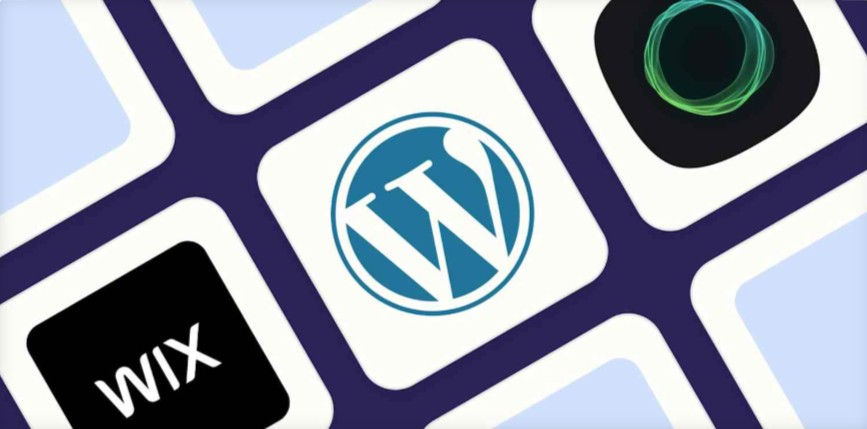

<!DOCTYPE html>
<html>
  <head>
    <link rel="stylesheet" href="M2_Semana3_Ejercicio_2_Blog.css" />
    <link
      rel="stylesheet"
      href="https://cdnjs.cloudflare.com/ajax/libs/font-awesome/4.7.0/css/font-awesome.min.css"
      <meta
      name="viewport"
      content="width=device-width, initial-scale=1"
    />
  </head>
</html>
<main class="main-container">
  <section>
    <h1 class="main-title">The 5 best blog sites in 2023</h1>
  </section>
  <section>
    <h2 class="sub-title">
      Choose the best blogging platform to showcase your content.
    </h2>
  </section>
  <section>
    <p class="author-info">By Harry Guiness, August 15 2023</p>
  </section>
  <section>
    <span class="icon-container">
      <a href="#" class="fa fa-facebook"></a>
      <a href="#" class="fa fa-twitter"></a>
      <a href="#" class="fa fa-linkedin"></a>
    </span>
  </section>
  <section class="image-container">
    
  </section>
  <section class="section1-text">
    <p>
      Blogging is far from dead. As the last two years of X-formerly-Twitter
      drama has shown, allowing a social media platform to control your access
      to your audience has big risks. If you want a platform where you can share
      your thoughts properly and keep control of things, it's impossible to beat
      a blog. Plus, you can always share your blog posts on social media,
      through a newsletter, and anywhere else. The whole point of a blog is that
      it's your content to do with as you will.
    </p>
  </section>
  <section class="section1-text">
    <aside>
      <div class="advertisement-container">
        <p>Promote and publish your content with automation</p>
        <a href="confirmation.html">
          <button type="Submit">Learn how</button>
        </a>
      </div>
    </aside>
    <p>
      Similarly, if you run a business and want to provide resources and
      recommendations to customers, the best way to do it is often to add a blog
      to your website. Best of all, your blog content gets indexed by
      Google—unlike almost all social media posts—so you can drive potential
      customers to your business through content marketing (and without having
      to pay for ads). Look at the blog you're reading right now: Zapier blog
      posts get millions of views per month and are one of the most valuable
      ways of getting new customers at Zapier.
    </p>
    <p>
      After testing all the most popular blog sites out there, these are the
      five best. And yes, two of them are WordPress, but there are a few great
      WordPress alternatives in here too.
    </p>
  </section>
</main>
